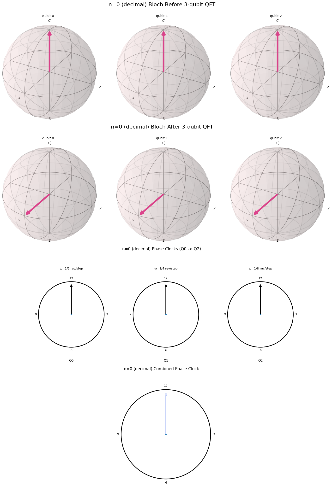

This slider lets you step through the Bloch sphere representations of qubit states. Each frame corresponds to a binary number from 0000 to 0111. Observe the "clock hand" rotations of each qubit.
Binary: 0000
